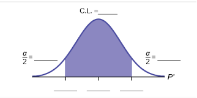
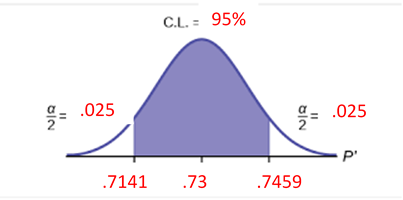
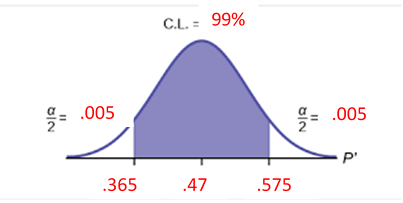
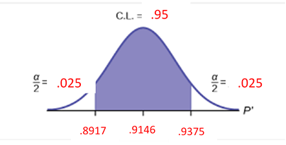

Unit 3 Normal Distributions and Confidence Intervals
6.3 Confidence Intervals for Population Proportions
What is the Proportion of Land on the Earth’s Surface?
We are going to generate random latitude and longitude coordinates using the site: Random.org
SAMPLE Statistics (Your Random Coordinates from the WebSite)
- Count the total number of Coordinate Sets in your sample. n = ________
- Count the number of Land Coordinates in your sample. x = __________
(how many of the sets of coordinates corresponded to land?)
- Calculate the proportion of LAND in your sample. \(\hat{p}=\frac{x}{n}=\) ___________
- Calculate the proportion of WATER in your sample \(\hat{q}=1-\hat{p}=\) ___________
POPULATION Parameters (Values we will infer about the whole Earth based on our sample)
Creating Intervals for Our Population Parameters
Let’s look at calculating two different intervals that allow for a margin of error.
FIRST INTERVAL:
Margin of Error for a 99% confidence interval
\(E=2.576(\sqrt{\frac{\hat{p} \hat{q}}{n}})=\) _________________ < p < __________________
Use \(\widehat{p}-E <\mathrm{ p }<\hat{p}+E\) to calculate the interval: _________________ < \(\hat{p}\) < __________________
"I am 99% confident the proportion of land on Earth’s surface is between ________ and _________”
- Does this confidence interval contain the true population proportion of 29%? __________
- What percentage of students in your class have confidence intervals that contain the true population proportion of 29%? __________
SECOND INTERVAL:
Margin of Error for a 90% confidence interval
\(E=1.645(\sqrt{\frac{\hat{p} \hat{q}}{n}})=\) _________________ < p < __________________
Use \(\widehat{p}-E <\mathrm{ p }<\hat{p}+E\) to calculate the interval: _________________ < \(\hat{p}\) < __________________
"I am 90% confident the proportion of land on Earth’s surface is between ________ and _________”
- Does this confidence interval contain the true population proportion of 29%? __________
- What percentage of students in your class have confidence intervals that contain the true population proportion of 29%? __________
If your grade depended on the true proportion of land on Earth’s surface actually being within the interval given in your statement, which statement would you submit? Put a check beside your statement choice.
Constructing a Confidence Interval for a Population Proportion
When constructing a confidence interval, use data from a sample to estimate information about the population. With large enough samples, we can use the binomial theorem to approximate a continuous normal distribution and therefore use z-scores when constructing the confidence interval.
Given the percentage of success in the sample, \(\widehat{p}\),
Estimate the percentage of success in the population, p
Variables/Symbols used in Confidence Interval Calculations
| Variable | Symbol | Description |
|---|---|---|
| Population Proportion | p | An unknown. The actual proportion for the entire population. |
| Sample Proportion | \(\widehat p\) | Known. Your measured proportion for your sample. |
| Best Point Estimate | \(\widehat p\) | The value you use to approximate the population proportion. |
| Alpha | α | The total area in the two tails beyond the critical values |
| Critical Values | \( z_\frac{\alpha}{2}\) | The lower/upper cutoffs for usual values on the standard normal curve. |
| Margin of Error | E | Padding you will use on either side of \(\widehat p\) when you build your interval. |
| Most Common Confidence Levels | Corresponding Value of Alpha | Corresponding Critical Value |
|---|---|---|
| 90% | \( \alpha \)=0.10 | \( z_\frac{\alpha}{2}=1.645\) |
| 95% | \( \alpha \)=0.05 | \( z_\frac{\alpha}{2}=1.96\) |
| 99% | \( \alpha \)=0.01 | \( z_\frac{\alpha}{2}=2.575\) |
| Any other CL | \( \alpha \)=1-(CL/2) | \( z_\frac{\alpha}{2}\) use technology |

Overview of Estimating an Interval for a Population Proportion
Requirements:
- Random Sample
- Binomial Distribution: Fixed n, Independent trials, 2 outcomes, Constant Probability
- Number of successes \((n \widehat{p})\) and number of failures \((n \widehat{q})\) are both greater than 5
Best Point Estimate for the Population Proportion:
The proportion of your sample, \( \widehat{p} \)
Margin of Error:
\(E=z_{\alpha / 2}\left(\sqrt{\frac{\hat{p} \hat{q}}{n} }\right)\)
Confidence Interval
Three ways to represent the Confidence Interval:
- \(\hat{p}-\mathrm{E} \lt \mathrm{p} \lt \hat{p}+\mathrm{E}\)
- \((\hat{p}-E, \hat{p}+E)\)
- \(\hat{p} \pm E\)
Min of interval = \( \hat{p} - E \)
Max of interval = \( \hat{p} + E \)
- In a 2017 study of 50 countries, 85% of the children received one dose of measles vaccination by their first birthday. Construct a 95% confidence interval estimate of the proportion of all children in the world who receive at least one dose of the vaccination before their first birthday.
- Calculate the Margin of Error

CL =
95% \( \alpha = \) .05 \( z_\frac{\alpha}{2} = \) 1.96 \( \hat{p} = \).85 \( \hat{q} = \) .15 n = 50 Critical value:
1.96 \(E=z_{\alpha / 2}\left(\sqrt{\frac{\hat{p} \hat{q}}{n}}\right)=\)
\(1.96 \sqrt{\frac{(.85)(.15)}{50}}=.0990\) - Calculate the Confidence Interval
Lower limit = \(\hat{p}-E=.85-.0990=.7510\); Upper limit = \(\hat{p}+\mathrm{E}=.85+.0990=.9490\)
Sample: \(\hat{p}=.85\), Population: \(.7510 \lt \mathrm{p} \lt .9490\)
\(.85 \pm .0990 =(.7510, .9490) \)
- Write your statement: We are
95% confident that the true proportion of all children who receive at least one dose of the measles vaccine is between .7510 and .9490 or 75.1% and 94.9%. - Analyze your results - Compare a population percentage with the Confidence Interval:
Is it correct for a newspaper reporter to report that “over 95% of children in the world are vaccinated against measles”? Why or why not?
It is not correct to report it because .95 is not in the interval (.7510, .9490)
- Calculate the Margin of Error
- In a survey of 150 senior executives, 47% said that the most common job interview mistake is to have little or no knowledge of the company. Construct a 99% confidence interval estimate of the proportion of all senior executives who have that same opinion. Is it possible that exactly half of all senior executives believe that the most common job interview mistake is to have little or no knowledge of the company”? Why or why not?
- Calculate the Margin of Error:

CL =
99% \( \alpha = \) .01 \( \hat{p} = \)
.47 \( \hat{q} = \) .53 - Construct the Confidence Interval:
Sample \(\hat{p}=.47\)
Population \(.365 \lt \mathrm{p} \lt .575\)
\(.47 \pm .1050\)
\((.365, .575)\)
- We are
99% confident that the true proportion of all senior executives who have the opinion that the most common interview mistake is lack of knowledge about the company is between .365 and .575 or 36.5% and 57.5%. - Compare a population percentage with the Confidence Interval:
Is it possible that exactly half of all senior executives believe that the most common job interview mistake is to have little or no knowledge of the company”? Why or why not?
Yes, because 0 .5 is the interval (.365 , .575)
- Calculate the Margin of Error:
- For a class project, a political science student at a large university wants to estimate the percent of students who are registered voters. The student surveys 500 students and finds that 300 are registered voters. Compute a 90% confidence interval estimate for the true percent of students who are registered voters, and interpret you results.
- What is the best point estimate of the population proportion of students who are registered voters?
\(\hat{p}=\frac{x}{n}=\frac{300}{500}=0.60\)
Use the sample data to construct a 90% confidence interval estimate of the percentage of students who are registered voters.
- Construct the Margin of Error

CL =
90 \( \alpha = \) .10 \( z_\frac{\alpha}{2} = \) 1.645 \( \hat{p} = \)
.60 \( \hat{q} = \) .40 n = 500 - Construct the Confidence Interval
\(.6000 \pm .0360\) (0.5640, 0.6360)
- We are
90% confident that the true proportion of students who are registered to vote is between 56.4% and 63.6%. - Compare a population percentage with the Confidence Interval:
Based on the results, are a majority of students registered to vote? Why or why not?
We can be 90% confident that the majority of students are registered to vote since the minimum value of the confidence interval is greater than 50%.
- What is the best point estimate of the population proportion of students who are registered voters?
- the Best Point Estimate,
- the Sample Proportion,
- and the Margin of Error:
- (0.30, 0.50)
same as \( .3 \lt \mathrm{p} \lt .5\) What is \( \hat{p} \)? \(\hat{p}=\frac{.3+.5}{2}=\frac{.8}{2}=.4\) \( \hat{p} \) is average (mean) between min and max
What is E? .4 - .3 = .1 E is the distance between the mean and the min (or the mean and the max) of the interval
Best point estimate \( \hat{p} \) = .4
Sample proportion \( \hat{p} \) = .4
Margin of error E = .1
Check your answer: Does the following give you the max and min of the interval:
\(.4 \pm .1 \quad \text { Which is } \hat{p} \pm E\)
- (0.2973, 0.5864)
Best point estimate: \(\hat{p}=\frac{0.2973+0.5864}{2}=0.44185\)
Sample proportion \( \hat{p} \) = .44185
Margin of error E = .44185 - .2973 = .14455
Check your answer: Does the following give you the max and min of the interval:
\(.44185 \pm .14455 \text { Which is } \hat{p} \pm E\)
- Suppose an internet marketing company wants to determine the current percentage of customers who click on ads on their smartphones. How many customers should the company survey in order to be 90% confident that the estimated proportion is within five percentage points of the true population proportion of customers who click on ads on their smartphones? Assume a previous study showed that 12% of customers click on ads. Modified from OpenStax
We know \( \hat{p} \)
CL = 90%, \(z_\frac\alpha2=1.645\), E = .05, \( \hat{p} = .12\), \(\widehat q=.88\), estimate of population n = 115 customers
In order to be 90% confident our sample proportion is within 5% of the actual population proportion. We need to survey 115 adults.
- Suppose an internet marketing company wants to determine the current percentage of customers who click on ads on their smartphones. How many customers should the company survey in order to be 90% confident that the estimated proportion is within five percentage points of the true population proportion of customers who click on ads on their smartphones? OpenStax
We do not know \( \hat{p} \) so we will have to assume \( \hat{p} \) = .50
CL = 90%, \(z_\frac\alpha2=1.645\), E = .05, \( \hat{p}== .50 \), \( \hat{q}== .50 \), n = 271 adults
In order to be 90% confident our sample proportion is within 5% of the actual population proportion. We need to survey 271 adults.
Point Estimate and Margin of Error from an Interval
Given the confidence interval, evaluate
Calculating the Minimum Sample Size for a Confidence Interval
\(n=\hat{p} \hat{q}\left[\frac{\mathbf{Z}_{\alpha / 2}}{E}\right]^{2}\)